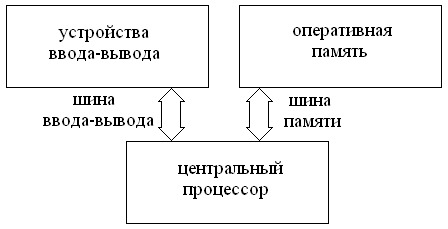
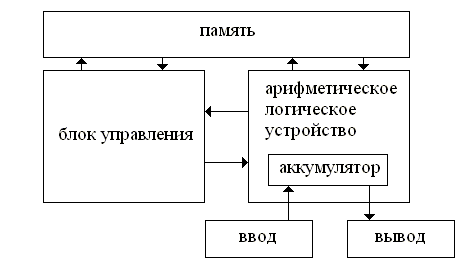
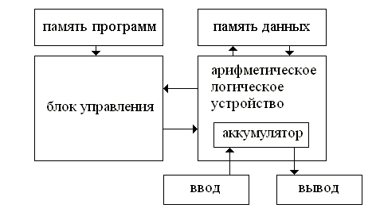
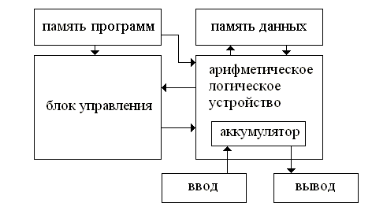
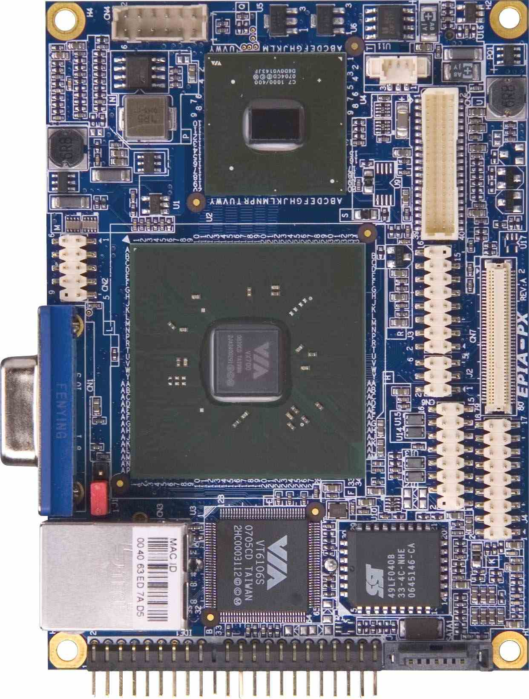

Под вычислительной системой (ВС) [1] будем понимать устройство, способное выполнять заданную, четко определенную последовательность операций. Операции включают в себя операции численных расчетов, манипулирования данными и ввода/вывода данных. В [2] ВС определяется как система обработки данных, которая настроена на решение задач конкретной области применения.
Основные подсистемы ВС [3] - центральный процессор, оперативная память и устройства ввода/вывода.

Рис. 1. Структурная схема простейшей ВС.
Центральный процессор (см. рис. 1) главная подсистема. Он управляет работой других подсистем. Центральный процессор состоит из блока управления, арифметического логического устройства и регистров. Блок управления выбирает из оперативной памяти команды и исполняет их. Арифметическое логическое устройство позволяет выполнять операции над данными. Регистры хранят обрабатываемые данные, адрес текущей исполняемой команды и флаги.
Оперативная память служит для хранения команд и данных. Она состоит из ячеек с одинаковым количеством бит (разрядностью). Каждая ячейка однозначно определяется адресом. Время доступа к любой ячейке одинаково. Каждая ячейка может быть прочитана или записана любое число раз. Последовательность адресов для доступа, вырабатываемая центральным процессором, может быть любой. Оперативная память связана с центральным процессором шиной памяти, по которой он передает адрес ячейки, к которой требуется произвести доступ, и код операции: чтение (из памяти в процессор) или запись (из процессора в память). В зависимости от операции данные передаются по шине в нужном направлении.
Устройства ввода-вывода выполняют функцию связи ВС с внешним миром. В частности, они служат для долговременного сохранения данных (устройства внешней памяти), взаимодействия с пользователем, связи с другими ВС (сетевые адаптеры, контроллеры шин). Устройствами внешней памяти могут быть дисковые накопители, устройства чтения оптических дисков, накопители на магнитной ленте, накопители на базе flash памяти. Примеры устройств для взаимодействия с пользователем: клавиатура, панель сенсорного ввода, видеомонитор, аудиоплата, печатающее устройство. Примеры устройств связи с другими ВС: сетевые интерфейсы Ethernet, Myrinet, аналоговые модемы, модемы ADSL, интерфейсы беспроводной связи IR, Bluetooth, Zigbee, WiFi.
Структурная схема на рис.1 дает лишь общее представление о ВС: какие в ней есть подсистемы и соединения между ними. Хотя все ВС (начиная с 1950-х годов) имеют эти подсистемы, они сильно различаются между собой. Эти различия вскрываются при более детальном рассмотрении организации ВС, которое основано на понятии архитектуры. Архитектура компьютера [4] - логическая организация, структура и ресурсы компьютера, которые может использовать программист. Архитектура определяет принципы действия, информационные связи и взаимное соединение основных логических узлов компьютера.
Существует большое разнообразие архитектур, ряд из которых будет рассмотрен в следующих главах. Две наиболее простые из них выделяются как базовые: архитектура фон Неймана и гарвардская архитектура.
Архитектура фон Неймана [5] - модель реализации ВС с одним устройством обработки (процессором) и одним устройством хранения (памятью)(см. рис. 2). Память используется для хранения как программ, так и данных. Архитектура предложена конструкторами ВС ENIAC Мокли и Экертом и популяризирована математиком Джоном фон Нейманом [6]. На момент появления данной архитектуры программы в ВС были либо жестко зашиты в логику работы процессора ВС, либо задавались с помощью перекоммутации связей у процессора. Вынесение программ в память сильно упростило их модификацию. Выполнение команд происходит в циклах, каждый из которых содержит следующие стадии:

Рис. 2. Архитектура фон Неймана
Размещение данных и программ в одной памяти позволяет строить самомодифицирующиеся программы. Это позволяет реализовывать необычайно гибкие решения. Однако, с другой стороны, ошибки в программах могут приводить к порче как данных, так и самих программ.
С момента своего появления и по настоящий день архитектура фон Неймана является эталоном для последовательных ВС. Хотя в чистом виде она сейчас не применяется даже в самых простых ВС. Узкое место данной архитектуры пропускная способность шины между процессором и памятью. При доступе к памяти процессор простаивает. На момент появления архитектуры скорости работы процессора и памяти были приблизительно одинаковы. Сейчас скорость работы процессора существенно выше, чем у памяти. Для преодоления узкого места был предложен ряд усовершенствований этой базовой архитектуры. Два основных из них это использование конвейера команд (см. главу 3) и использование кэш памяти. Кэш память память более малого размера, чем оперативная. Но она более быстрая и расположена в процессоре. Часто используемые данные хранятся в кэш памяти, что исключает необходимость их чтения из оперативной памяти через шину.
Гарвардская архитектура[7] - архитектура последовательных ВС, в которой память физически и логически разделена на две части: память программ и память данных (см. рис. 3). Впервые архитектура была реализована на машине Mark I, построенной в Гарвардском университете. Блок управления может считывать команды из памяти программ. АЛУ может считывать и записывать данные из памяти данных. Так как для доступа к памяти программ и памяти данных используются разные каналы, то возможен одновременный доступ к ним. Кроме этого, они могут иметь разные физические характеристики и логическую организацию (размер и разрядность слова)

Рис. 3. Гарвардская архитектура
В модифицированной Гарвардской архитектуре (см. рис. 4) добавлена связь между памятью программ и АЛУ, что позволяет хранить в памяти команд константы, например, строки.

Рис. 4. модифицированная Гарвардская архитектура
В современных ВС Гарвардская архитектура используется в сигнальных (DSP) процессорах и в микроконтроллерах. Микроконтроллер - микропроцессор для встраиваемых и разнообразных специализированных ВС. Микроконтроллер отличается от обычного процессора пониженным энегропотреблением, часто малым размером и малым числом выводов на корпусе. Также он может иметь дополнительные возможности, таке как оцифровка аналогового сигнала, интегрированный интерфейс для связи. Типичный микроконтроллер (PIC, Atmel AVR8) имеет модифицированную Гарвардскую архитектуру. Для программного обеспечения микроконтроллеров надежность гораздо важнее возможности построения самомодифицирующихся программ. Размещение программ в отдельной памяти, которая может записываться только при программировании микроконтроллера, исключает возможность случайной порчи программ.
К настоящему моменту разработано множество разных ВС, отличающихся параметрами, архитектурными принципами построения, размерами и сферами применения. Существуют различные классификации ВС. Они могут делить ВС на классы по разным критериям. Вот некоторые из них:
При использовании одной и той же элементной базы второй и третий пункты дают очень похожую разбивку на группы. В следующих главах мы будем сравнивать ВС на основе их архитектуры. Сейчас рассмотрим классификацию ВС по размеру и области применения ВС.
В [3] в качестве основной предлагается использовать классификацию ВС по их размеру. Хотя размеры ВС постоянно уменьшаются по мере развития используемой элементной базы, повышения степени интеграции используемых СБИС, тем не менее можно выделить сложившиеся классы ВС, которые созраняются уже несколько десятилетий. Эти классы также вполне подходят для классификации ВС по производительности.
Однокристальные ВС - самые компактные. Они состоят всего из одной микросхемы, которая содержит процессор, память и систему ввода вывода. Некоторые современные микроконтроллеры можно отнести к однокристальным ВС. Такие микроконтроллеры кроме функций, типичных для микропроцессора, могут иметь оперативную память, аналого-цифровой преобразователь (АЦП), разнообразные интерфейсы для устройств ввода/вывода. Размер современных однокристальных систем может быть менее 0.7x0.7 см.
Следующими по размеру являются одноплатные ВС. Сейчас можно выделить два класса таких систем: встраиваемые и карманные ПК.
Встраиваемые системы обычно состоят из одной печатной платы малых размеров, на которой расположен микроконтроллер и некоторое количесво схем обвязки. Однокристальные ВС можно рассматривать как самый компактный вариант встраиваемой системы. Более сложные встаиваемые системы могут иметь в своем составе полнофункциональную системую плату. Размер таких систем составляет несколько сантиметров.
Например, ВС на базе системной платы VIA PX10000G [8]- Intel-совместимая системная плата крошечных размеров (3.8 x 2.8 дюймов, форм-фактор picoITX). На плате расположен Intel-совместимый процессор C7 с тактовой частотой 1ГГц и имеется разъем для установки ОЗУ размером до 1 Гб. При всей компактности и экономичности, плата позволяет использовать широкораспространенное программное обеспечение на базе ОС Linux или Windows.

Рис. 5. Системная плата VIA PX10000G
Встраиваемые системы - самые массовые ВС. Они отличаются огромным разнообразием и присутствуют во многих бытовых изделиях. В современном автомобиле имеются десятки (!) встраиваемых систем, выполняющих разнообразные функции: управление инжекторным двигателем, навигация, обеспечение комфорта, управление сигнализацией, диагностика неисправностей.
Карманные ПК (personal digital assistant - PDA) - компактные системы, имеющие экран с сенсорным вводом. Впервые были реализованы в первой половине 1990-х годов фирмой Apple (Newton). Современные PDA имеют процессор с тактовой частотой до 624МГц (некоторые модели Dell Axim), оперативную память по 256МБ, встроенную внешнюю память до 1ГБ (HP rx5730).
Микро-ЭВМ - системы, которые могут уместиться на столе. Изначально они определялись как системы, в которых в качестве центрального процессора использовался микропроцессор, однако в настоящее время большинство ВС из всех других классов также использует микропроцессоры. Исключая встраиваемые системы, микро-ЭВМ являются наиболее многочисленными. В настоящее время к микро-ЭВМ относятся портативные компьютеры (notebook), персональные компьютеры, рабочие станции, и серверы. Они сильно различаются по назначению, характеристикам и по стоимости. Персональный компьютер (ПК) служит для работы одного пользователя с задачами, не требующими больших вычислений. Рабочая станция также предназначена для одного пользователя, но позволяет выполнять сложные задачи для моделирования, проектирования и т.д. Сервер предназначен для работы группы пользователей. Современная микро-ЭВМ может иметь один или несколько одно- или многоядерных процессоров, оперативную память размером от 512МБ до нескольких ГБ, внешнюю память на дисках от 120Гб до нескольких ТБ.
Мини-ЭВМ - ВС из одной-двух стоек размером с холодильник (0.5x0.5x2м). Это - ВС общего назначения, стоимость которых начинается от 20 000 долларов. Мини-ЭВМ служит для работы группы пользователей. Первая мини-ЭВМ PDP-8 разработана DEC в 1964 г и стоила 16000 долларов. Примеры мини-ЭВМ: DEC PDP-11, HP 3000. По мере развития микропроцессоров грань между мини-ЭВМ и микро-ЭВМ практически стерлась, так как современные сервера, относящиеся к микро-ЭВМ, обладают мощью мини-ЭВМ при более малых размерах и служат для решения аналогичных задач.
Большие ЭВМ (mainframe) занимают целые помещения и обладают очень высокой производительностью и объемом оперативной и внешней памяти. Архитектура современных больших ЭВМ - параллельная. Такие ВС служат для одновременной работы многих пользователей и приобретаются крупными организациями. Пример больших ЭВМ - IBM RS/6000 и IBM System/390.
СуперЭВМ - самые немногочисленные и самые производительные из существующих ВС. Грань между большими ЭВМ и суперЭВМ все время сдвигается по мере повышения производительности ВС. Современные суперЭВМ имеют производительность существенно выше 1TFLOPS. Примеры суперЭВМ - Earth Simulator, IBM BlueGene/L. Подобные машины занимают огромные залы и потребляют более 100КВт.
Хотя ВС с большинством рассматриваемых архитектур обладают очень высокой универсальностью, при их разработке учитывается набор основных применений, для которых конкретная ВС будет использоваться. Конечно, эта ВС часто может применяться и для других задач, но именно на ее целевых задачах она позволяет раскрыть максимум своих возможностей. ВС широко проникли во многие сферы деятельности человека. Указать все применения - затруднительно. Перечислим основные направления и рассмотрим предъявляемые ими требования к ВС.
1. Моделирование. Наряду с наблюдением за естественными системами и экспериментами с техническими системами, существует такой способ их изучения, как моделирование. Он позволяет определить поведение систем в разных ситуациях за короткое время и без больших материальных затрат. Моделирование может использоваться и в процессе проектирования технических систем. Вместо построения физических прототипов проектируемого объекта (автомобиль, самолет, ядерная бомба, информационно-вычислительная сеть, техническое освоение нефтегазовой провинции, плотина, промышленное предприятие, лекарство и т.д.) в компьютере строится модель объекта. Над моделью выполняются машинные эксперименты, которые позволяют судить о поведении реального объекта. Такое проектирование является единственно возможным для тех объектов, для которых невозможны натурные испытания по физическим, экологическим, юридическим и другим причинам. Для тех объектов, для которых реальные испытания возможны, определяющим является сокращение в десятки раз времени и стоимости проектирования и повышение его качества за счет перебора большого множества вариантов и проведения весьма малого числа натурных испытаний только в финальной части проектирования.
Структуры данных для моделирования могут быть весьма сложными. Они могут быть неоднородными для разных частей модели (адаптивность), могут меняться непосредственно в процессе моделирования (динамизм). Однако, как правило, данные для моделирования представляются трехмерными массивами, ячейки которых содержат набор одинаковый переменных. Для практически полезных моделей размер массива превышает 1000x1000x1000 ячеек, в каждой из которых имеется переменные, количество которых зависит от модели и варьируется от нескольких единиц до нескольких десятков. Повышение размерности массива может давать улучшение точности результатов. Следовательно, для задач моделирования требуется большой объем оперативной памяти у ВС (от нескольких гигабайт). Качество результатов моделирования растет и по мере увеличения числа шагов моделирования. Кроме этого, исследователи нуждаются в как можно более быстром получении результатов и возможности многократно исполнять процесс моделирования в сжатые сроки, варьируя разные параметры моделей. Это означает, что моделирование требует от ВС как можно более высокой производительности, измеряемой числом операций в секунду. Для разнообразных численных методов требуется высокая производительность для операций над данными в формате с плавающей запятой. Для моделей, основанных на клеточных автоматах, клеточно-нейронных сетях, необходима высокая производительность для побитовых и арифметических операций над целочисленными данными.
Исходя из требований к объему памяти и производительности, для задач моделирования применяются самые быстродействующие ВС, доступные на настоящий момент. При наличии больших финансовых средств, используются суперЭВМ. Основное применение таких ВС, как Earth Simulator, BlueGene/L - моделирование. Если супер ЭВМ не доступны, строятся недорогие, но достаточно высокопроизводительные кластеры.
Хранение и обработка данных. Человечество накопило огромные объемы разноплановой информации: тексты, аудио, видео, растровая графика. Использование ВС для их хранения и обработки дало огромные преимущества как в плане компактности и надежности, так и в плане более удобных способов их создания и использования. По мере улучшения характеристик ВС, надежности и удобства программного обеспечения, увеличения объема сохраняемой информации, хранение с использованием ВС станет основным. К настоящему времени создано большое число систем управления базами данных (СУБД) и знаний, ГИС, систем документооборота для предприятий, поисковых систем. Основные требования к ВС в задачах хранения и обработки информации ― это большой объем внешней памяти, высокая скорость доступа к ней, ее высокая надежность. Крупные организации, обладающие огромными массивами информации, для решения подобных задач часто используют большие ЭВМ (например, IBM RS/6000). Малые организации или подразделения могут использовать менее дорогие ВС, вплоть до небольших серверов на базе микро- или мини-ЭВМ. Библиотечные и другие объединенные информационные ресурсы СО РАН размещены на мини-ЭВМ Siemens RM600-E30 в Сибирском Суперкомпьютерном Центре [9].
Управление оборудованием. Сложность и скорость протекания многих современных технологических процессов такова, что ручное управление их человеком невозможно. В них или очень много параметров для управления, или эти параметры нужно менять с огромной скоростью, или же число операций велико. Первые попытки автоматизированного управления были основаны на механических системах (например, система управления ткацкими станками Жакарда на базе перфокарт). В первой половине XX века для этой цели стали использовать появившиеся тогда аналоговые вычислительные машины. В процессе развития цифровых систем сформировался класс ВС, называемый встраиваемыми системами. Они служат для управления оборудованием, ввода данных с датчиков и взаимодействия с другими ВС. Оборудование может быть самым разнообразным, например, сервомоторы или реле промышленных роботов. Примерами датчиков могут служить термопары для регистрации температуры, акселерометры для регистрации ускорения, ультразвуковые датчики для измерения расстояния до препятствия, модули GPS для ввода географических координат, скорости и времени и т.д. Для взаимодействия с другими ВС используются всевозможные интерфейсы для передачи данных: последовательные интерфейсы RS-232, RS-422, шинные интерфейсы, Motorola SPI, Philips I2C/TWI, USB, FireWire. К встраиваемым системам предъявляется требование работы в реальном времени. Т.е. система обязана реагировать на события без превышения некоторого временного интервала. Встраиваемые системы, как правило, имеют очень компактные управляющие программы, к которым предъявляются повышенные требования в плане надежности. Требования к объему памяти, как правило, минимальны. Требования к производительности ВС варьируются от минимальных до умеренных. В случаях, когда встраиваемые систем не имеют сетевого питания, а используют батареи, особенно если эти системы располагаются в труднодоступных местах, к ним предъявляются жесткие требования по энергопотреблению. В состоянии покоя они могут потреблять существенно меньше 1мВт, в момент работы - несколько мВт. Требования по цене ВС имеют самый широкий спектр. Массово производимые ВС, например, для интеллектуального управления осветительными и бытовыми приборами, могут стоить около 1 доллара. К потолку стоимости встраиваемых систем для военных, космических и критических применений ограничений не применяют. От встраиваемых систем иногда требуют малых физических размеров, устойчивая работа при очень низких (-50С), очень высоких (+100 и выше) температурах и при излучении.
С учетом указанных выше требований ВС для встраиваемых систем обычно строятся на базе однокристальных микроЭВМ или микроконтроллеров. Собственно сама ВС почти всегда реализуется одним контроллером. Кроме него могут быть схемы стабилизации питания, датчики, реле и разнообразные схемы интерфейсов. Существует широкий спектр доступных микроконтроллеров от десятков производителей. Наиболее распространены из них Atmel AVR8, Intel 8051 (и множество совместимых с ним), PIC, ARM. Разрядность микроконтроллеров ― от 4 до 64. Для применений, требующих очень высокую производительность, могут использоваться и самые передовые микропроцессоры общего назначения. Например, HDTV система фирмы Toshiba основана на многоядерном микропроцессоре IBM Cell.
Задачи искуственного интеллекта. Эти задачи весьма разнообразны, как и их требования к ВС. Основные из них: обработка текстов на естественных языках, экспертные системы, управление базами знаний, распознавание образов (в том числе речи на естественном языке, рукописного текста на естественном языке), системы логического вывода (Prolog), решатели уравнений в символьном виде (Soft Warehouse Derive, Unicalc ИСИ СО РАН), системы верификации моделей. В случае, когда объем данных мал, и нет жестких требований на время исполнения, для большинства задач могут быть использованы обычные ПК или рабочие станции. При большом объеме данных могут потребоваться ВС с большим объемом оперативной памяти (большие ЭВМ, супер ЭВМ). При требованиях реального времени могут быть разработаны ВС со специализированной архитектурой, ориентированной на решение узкой задачи.
Многочисленные прочие применения имеют свои наборы требований, которые часто удовлетворяются наиболее массово производимыми микроЭВМ с архитектурой IA-32. В случае игровых применений такие микроЭВМ дополняются мощным графическим сопроцессором, производительность которого для некоторых операций может многократно превышать ту, что есть у центрального процессора. Пиковая производительность графического сопроцессора Nvidia Tesla C870 GPU - 500 GFLOPS. Самый быстрый массово выпускаемый графический сопроцессор на настоящий момент - ATI Radeon HD 3870 X2 с двумя ядрами HD 3800 с 256-разрядной шиной и собственной памятью в 1ГБ.
[1] Толковый словарь по вычислительным системам. - М. - Машиностроение. - 1990
[2] Ларионов А.М., Майоров С.А., Новиков Г.И. - Вычислительные комплексы, системы и сети. - Ленинград. - Энергоатомиздат. - 1987
[3] Дж. Уокерли. Архитектура и программирования микро-ЭВМ. - т. 1. - М. - Мир. - 1984
[4] http://ru.wikipedia.org/wiki/Архитектура_компьютера
[5] Von Neumann architecture. - http://en.wikipedia.org/wiki/Von_Neumann_architecture
[6] Null L., Lobur J. - The Essentials of Computer Organization and Architecture. - Jones and Bartlett Publishers. - 2003
[7] Harvard architecture. - http://en.wikipedia.org/wiki/Harvard_architecture